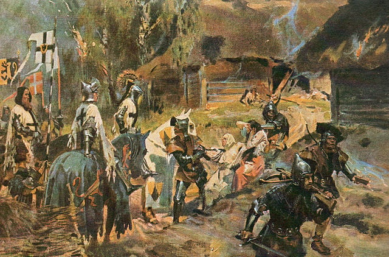
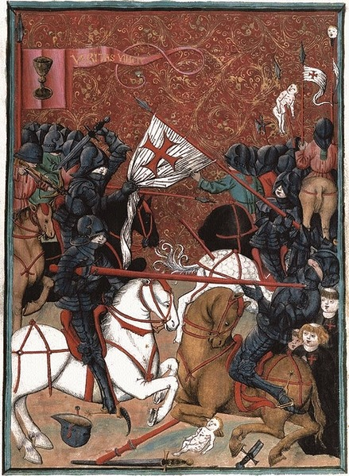

Guerras religiosas a lo largo de la historia
Cruzadas Levantinas, en la Tierra Santa
Cruzadas del norte
s
- Cruzada del Kalmar
- Cruzada Slava
- Primera Cruzada sueca
- Segunda Cruzada sueca
- Tercera Cruzada sueca
- Cruzada livona
- Crusada prusiana
- Cruzada lituana
Cruzadas tardías
- Cruzada aragonesa
- Cruzada de Aydin
- Cruzada egipcia
- Cruzada savoyana
- Primera cruzada barbara
- Segunda cruzada barbara
- Tercera cruzada barbara
- Cruzada de Nicopolis
- Cruzada de Varna
Cruzadas contra cristianos

- Cruzada cáatara
- Cruzada drentera
- Cruzada de Stedinger
- Cruzada bosnia
- Cruzada checa
- Cruzada del anti-papa
- Cruzada husita
Fitna (guerra civil musulmanas)
- Guerra ridda
- Primera fitna
- Segunda fitna
- Revuelta de Yazid al-Mohamed
- Revuleta de Harith
- Revuelta de Zayid idn Ali
- Revuelta berber
- Tercera fitna
- Revolución Abassid
- Revuelta de Mohamed de alma pura
- Guerra Qay-Yamad
- Cuarta fitna
- Revuelta Basumuria
- Samarra anárquica
- Quinta fitna
- Revuelta Kajirita
- Revuelta de esclavos bantu
Otras guerras religiosas
- Guerra de la liga Lutherana
- Guerra fulaní
- Guera saxona
- Guerra de independencia griega
- Conflicto Soga-Monobone
- Rebelion de los dunganese
- Guerras sagradas
- Guerra de las flores
- Guerra indo-pakistani
- Rebelion celestial